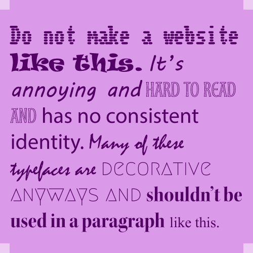

A simple way to divide sections and create visual hierarchy is to pair differing typefaces. Like in the example to the right, you can use a sans-serif typeface for headlines and a serif face for body text. You can also create contrast with font weight or width instead, like using a heavy or condensed face for headlines and a thinner, wider, more legible face for body text. Some font libraries can suggest other typefaces to pair, and Google Fonts provides many resources to help you use the typefaces it offers.

Like color palettes, you should consider carefully which typefaces you use, and how many. Using a lot of different styles and weights haphazardly makes a website inconsistent and unappealing. Your project may need more or less, but limiting yourself to 2 or 3 typefaces is a good baseline. You should choose legible, accessible typefaces, especially for mobile sites, and the more decorative typefaces should be relegated to very specific, unessential visuals.
if you’re designing a logo you’ll most likely modify one main font and maybe use a secondary typeface. For a website or an app, you’ll likely want to follow the same rule. Especially when designing for digital screens, legibility and accessibility are key to creating a good user experience.
There are many tools online to help you build a color palette. Many sites like Adobe Color and Figma let you create your own while sites like Coolors have pre-made palettes for you to choose from.
Once you have your color palette, don’t immediately fill your website with it. Before that, make your design a wireframe using only shades of gray. The lack of color in the wireframe makes it easier to focus on making an engaging layout. Using grays right can make an appealing website even without color, and could even help you realize how your color palette should be used when it comes time to color your site. That could save you time later in the design process.
The 60-30-10 rule says that a website should use three main colors. The primary color, which is used for most backgrounds, makes up about 60% of your website. The secondary color makes up about 30%. The accent color, which usually contrasts the most, makes up only the remaining 10%. Good contrast helps the accent stand out and draw users’ attention to the important parts of your website. Before you choose your colors, you should decide on a color scheme. That could be monochromatic, complementary, or analogous. Take color psychology into account as well so the colors you use achieve the effect you want. Adding images may force you to break your color palette, but their color contrast helps put emphasis on them, which is typically what you want for an image anyway.